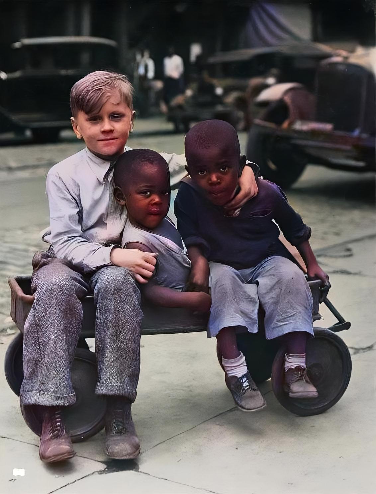
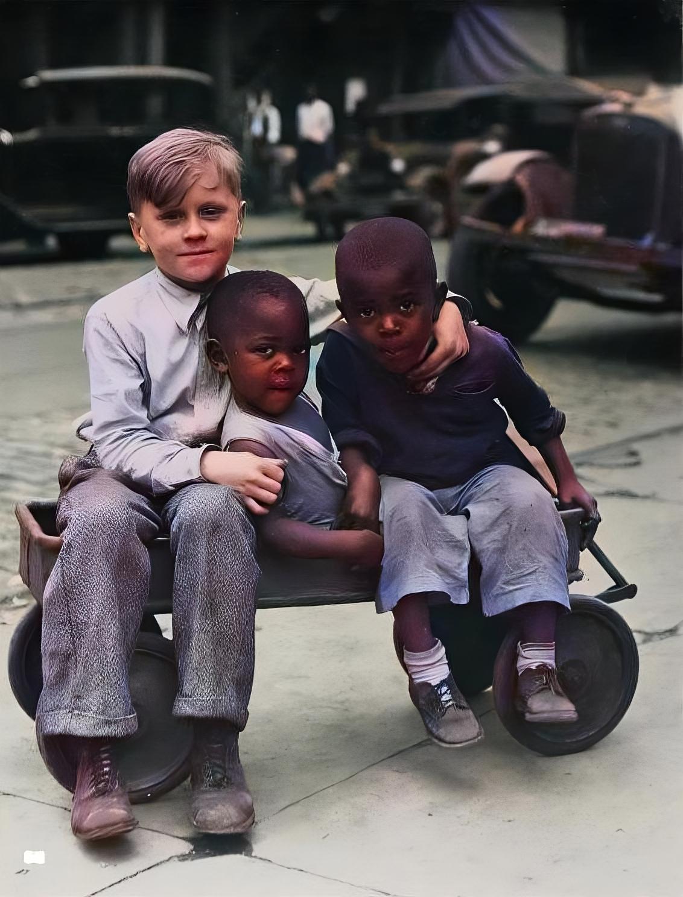

Breathe Color into Old Photos with the power of AI
ReColor is a simple yet powerful tool that uses the power of AI to colorize old black and white photos. It is a simple and easy-to-use tool that can bring back the memories of the past in full color.


 
